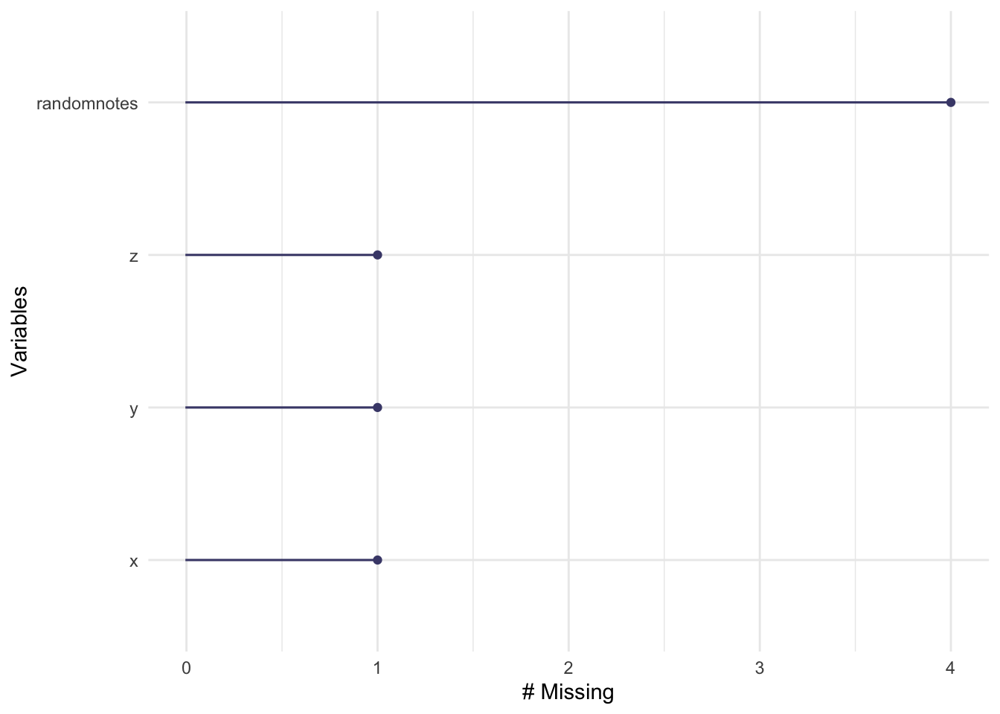
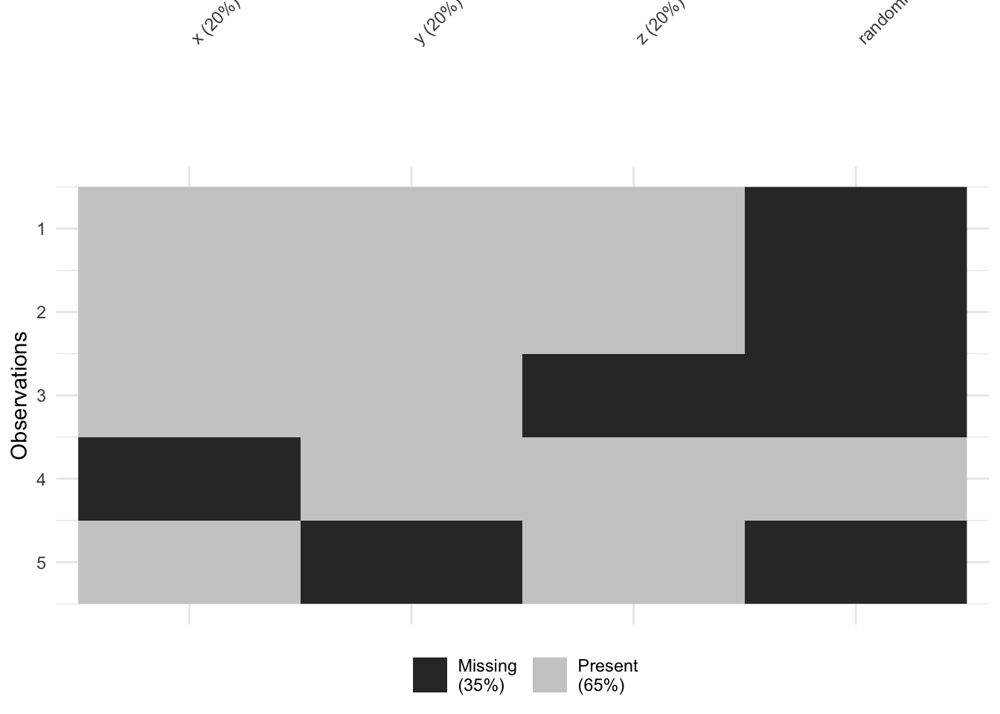

Chapter 7 Missing Data In Depth
This tutorial goes deeper on missing data than the QC steps covered in Tutorial 5. It covers how to identify why data is missing, how to visualise it, and how to handle it appropriately depending on your situation — including how missing data interacts with regression models.
Before you start: Make sure you have the following packages installed and loaded in your library code chunk:
skimr,dplyr,naniar,tidyr, andtidyverse.
We will use a small example dataset throughout so you can see exactly what each command does:
testdata <- data.frame(
x = c(1, 2, 3, NA, 5),
y = c("A", "B", "C", "D", NA),
z = c(10, 15, NA, 20, 25),
randomnotes = c(NA, NA, NA, "hello", NA)
)
print(testdata)## x y z randomnotes
## 1 1 A 10 <NA>
## 2 2 B 15 <NA>
## 3 3 C NA <NA>
## 4 NA D 20 hello
## 5 5 <NA> 25 <NA>7.1 What is missing data?
In R, missing values are stored as NA. You may also encounter NaN (Not a Number), which appears when a calculation produces an undefined result (e.g. dividing zero by zero).
7.1.0.1 Missing values in external datasets
When reading in data from outside R, missing values are not always stored as NA. Common placeholders include:
-1(common in government datasets)99,-99,9999,999(arbitrary placeholders)- Blank cells in spreadsheets
If you know your dataset uses non-standard codes for missing values, you can tell R what to look for when reading in the file. Always check your data carefully afterwards to make sure it worked correctly.
For CSV files:
For Excel files:
na.strings (CSV) and na (Excel) both tell R which values to treat as NA on import.
7.2 Why is data missing?
Understanding why data is missing matters — it affects which approach to handling it is appropriate.
Missing Completely at Random (MCAR) The probability of missingness is unrelated to any variable in the dataset. Example: a sensor randomly fails. If data is MCAR, removing missing cases is usually unbiased.
Missing at Random (MAR) Missingness is related to other observed variables, but not to the missing value itself. Example: younger participants are less likely to report their income, but within each age group, missingness is random. Multiple imputation methods can help here.
Missing Not at Random (MNAR) Missingness depends on the value of the missing data itself. Example: people with higher incomes are less likely to report their income. This is the most problematic — the missingness mechanism itself needs to be modelled.
Key takeaway: Only remove missing data casually when you have good reason to believe it is MCAR. For MAR or MNAR, seek specialist statistical advice.
7.3 Identifying missing data
7.3.0.1 Counting NAs
To count missing values per column:
## x y z randomnotes
## 1 1 1 4To count missing values per row:
## [1] 1 1 2 1 2To count NAs in a single column:
## [1] 1To include missing values in a frequency table:
##
## A B C D <NA>
## 1 1 1 1 17.3.0.2 Summary functions
summary() and skim() both report missing value counts automatically:
## x y z randomnotes
## Min. :1.00 Length :5 Min. :10.00 Length :5
## 1st Qu.:1.75 N.unique :4 1st Qu.:13.75 N.unique :1
## Median :2.50 N.blank :0 Median :17.50 N.blank :0
## Mean :2.75 Min.nchar:1 Mean :17.50 Min.nchar:5
## 3rd Qu.:3.50 Max.nchar:1 3rd Qu.:21.25 Max.nchar:5
## Max. :5.00 NAs :1 Max. :25.00 NAs :4
## NAs :1 NAs :1| Name | testdata |
| Number of rows | 5 |
| Number of columns | 4 |
| _______________________ | |
| Column type frequency: | |
| character | 2 |
| numeric | 2 |
| ________________________ | |
| Group variables | None |
Variable type: character
| skim_variable | n_missing | complete_rate | min | max | empty | n_unique | whitespace |
|---|---|---|---|---|---|---|---|
| y | 1 | 0.8 | 1 | 1 | 0 | 4 | 0 |
| randomnotes | 4 | 0.2 | 5 | 5 | 0 | 1 | 0 |
Variable type: numeric
| skim_variable | n_missing | complete_rate | mean | sd | p0 | p25 | p50 | p75 | p100 | hist |
|---|---|---|---|---|---|---|---|---|---|---|
| x | 1 | 0.8 | 2.75 | 1.71 | 1 | 1.75 | 2.5 | 3.50 | 5 | ▇▇▇▁▇ |
| z | 1 | 0.8 | 17.50 | 6.45 | 10 | 13.75 | 17.5 | 21.25 | 25 | ▇▇▁▇▇ |
7.3.0.3 Visualising missing data — naniar
The naniar package provides helpful visualisations for understanding the pattern of missing data across your dataset.


vis_miss() is particularly useful for spotting whether missingness clusters in particular rows or columns — which can give clues about whether data is MCAR, MAR, or MNAR.
7.4 Handling missing data
7.4.1 Remove rows with any NA — na.omit()
Listwise deletion removes any row that contains an NA in any column:
## [1] x y z randomnotes
## <0 rows> (or 0-length row.names)Warning: If your dataset has columns with lots of NAs that are irrelevant to your analysis (like a free-text notes column),
na.omit()will still remove rows because of them. Always check how many rows you lose:If you’ve lost more than expected, use the targeted approach below instead.
7.4.2 Remove rows where specific columns are NA
To remove rows only where particular columns are missing, use filter():
## x y z randomnotes
## 1 1 A 10 <NA>
## 2 2 B 15 <NA>
## 3 5 <NA> 25 <NA>!is.na(x) means “keep rows where x is NOT missing”. This is more precise than na.omit() and is usually the better choice.
You can also use complete.cases() for the same result:
Or drop_na() from tidyr:
7.4.3 Replace NAs with a value
Sometimes you want to keep the row but fill in a specific value — for example, replacing NA with 0 or "Unknown".
Using ifelse():
## x y z randomnotes
## 1 1 A 10 <NA>
## 2 2 B 15 <NA>
## 3 3 C NA <NA>
## 4 99 D 20 hello
## 5 5 <NA> 25 <NA>Using replace_na() from tidyr (cleaner for multiple columns at once):
## x y z randomnotes
## 1 1 A 10 <NA>
## 2 2 B 15 <NA>
## 3 3 C NA <NA>
## 4 99 D 20 hello
## 5 5 Unknown 25 <NA>Note: Replacing NAs with a fixed value is a form of imputation. Only do this if you have a principled reason — for example, replacing
NAcounts with0when you know the true value is zero, not unknown.
7.5 Missing data in common functions
You don’t always need to remove missing data in advance. Many R functions have a built-in option to ignore NAs.
7.5.0.1 na.rm = TRUE
By default, most summary functions return NA if any values are missing:
## [1] NAAdd na.rm = TRUE to ignore missing values:
## [1] 17.5## [1] 6.454972na.rm = TRUE works in mean(), median(), sd(), sum(), min(), max(), and most other summary functions.
7.5.0.2 Correlation and missing data
The cor() function doesn’t use na.rm — it has its own argument:
## [1] 0.2919672For a full correlation matrix, pairwise deletion uses all available data for each pair of variables, rather than removing entire rows:
Pairwise deletion retains more data than listwise deletion, but can result in different sample sizes per correlation — worth noting when interpreting results.
7.6 Missing data in regression models
Most modelling functions in R remove rows with missing values automatically. The question is how they do it — and this matters when you look at predictions.
model_omit <- lm(z ~ x, data = testdata, na.action = na.omit)
model_exclude <- lm(z ~ x, data = testdata, na.action = na.exclude)| Method | What it does | When to use |
|---|---|---|
na.omit |
Removes rows with missing data; drops them from predictions | When you don’t need predictions for missing rows |
na.exclude |
Removes rows with missing data; keeps NA in predictions at the original row positions |
When you need predictions to align with your original dataset |
I recommend na.exclude unless you have a specific reason not to.
The difference becomes clear when you look at predictions:
## 1 2 4 5
## 16.49309 16.53220 20.32520 16.64951predict(model_exclude) # predictions with NA preserved at missing rows — same length as original data## 1 2 3 4 5
## 16.49309 16.53220 NA 20.32520 16.64951na.exclude keeps the structure of your dataset intact, which matters in time series or longitudinal analyses where the position of missing values is meaningful.
7.7 Command reference
A quick-copy summary of all commands covered in this tutorial. Replace testdata with your dataset name.
# -------------------------------------------
# Reading in data with non-standard NA codes
# -------------------------------------------
mydata <- read.csv("data.csv", na.strings = c("", "NA", "-1", "99", "9999"))
mydata <- read_excel("data.xlsx", na = c("", "NA", "-1", "999"))
# Force specific values to NA after reading in
mydata$column[mydata$column < 0] <- NA
# -------------------------------------------
# Identifying missing data
# -------------------------------------------
colSums(is.na(testdata)) # NAs per column
rowSums(is.na(testdata)) # NAs per row
sum(is.na(testdata$x)) # NAs in one column
table(testdata$y, useNA = "ifany") # frequency table including NAs
summary(testdata) # summary with NA counts
skim(testdata) # detailed summary with NA counts
gg_miss_var(testdata) # naniar: NAs per variable (plot)
vis_miss(testdata) # naniar: NA heatmap (plot)
# -------------------------------------------
# Removing rows with missing data
# -------------------------------------------
data_complete <- na.omit(testdata) # remove any row with any NA
data_filtered <- testdata |> filter(!is.na(x) & !is.na(z)) # targeted: specific columns only
data_filtered <- testdata |> drop_na(x, z) # tidyr equivalent
# -------------------------------------------
# Replacing NAs with a value
# -------------------------------------------
testdata$x <- ifelse(is.na(testdata$x), 99, testdata$x) # replace with 99
testdata <- testdata |> replace_na(list(x = 0, y = "Unknown")) # replace multiple columns
# -------------------------------------------
# Handling NAs inside functions
# -------------------------------------------
mean(testdata$x, na.rm = TRUE)
sd(testdata$x, na.rm = TRUE)
cor(testdata$x, testdata$z, use = "complete.obs")
cor(testdata, use = "pairwise.complete.obs")
# -------------------------------------------
# Regression with missing data
# -------------------------------------------
lm(z ~ x, data = testdata, na.action = na.omit) # drops missing rows from predictions
lm(z ~ x, data = testdata, na.action = na.exclude) # preserves NA positions in predictions (recommended)7.8 Troubleshooting
Function returned NA instead of a number
Your column contains missing values. Add na.rm = TRUE:
na.omit() removed far more rows than expected
You probably have a column with many NAs that isn’t relevant to your analysis (e.g. a notes column). Use filter(!is.na(columnname)) or drop_na(col1, col2) to target only the columns that matter.
cor() returned NA even with na.rm = TRUE
cor() doesn’t use na.rm. Use use = "complete.obs" or use = "pairwise.complete.obs" instead.
Predictions from lm() are a different length to my dataset
You used na.action = na.omit (the default). Switch to na.action = na.exclude to preserve NA positions in the prediction vector so it matches your original data length.
vis_miss() or gg_miss_var() not found
The naniar package isn’t loaded. Add library(naniar) to your library code chunk.